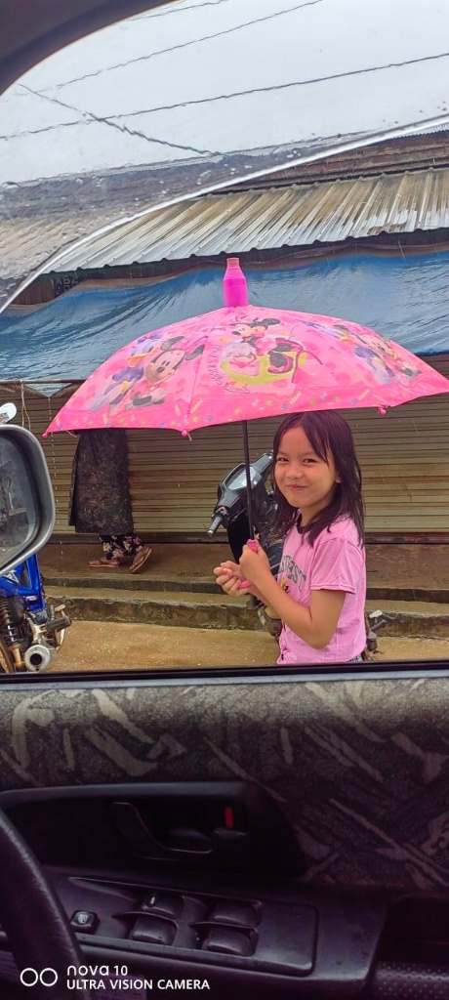
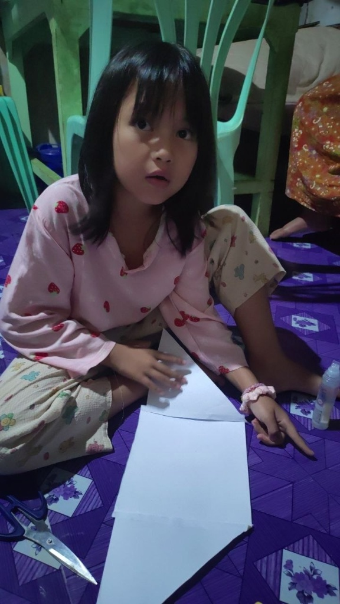
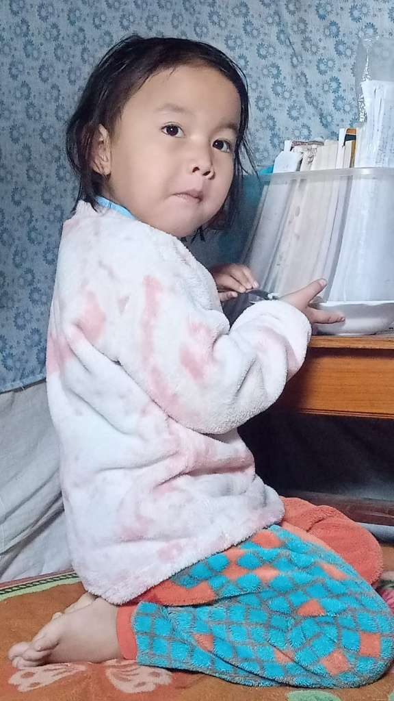
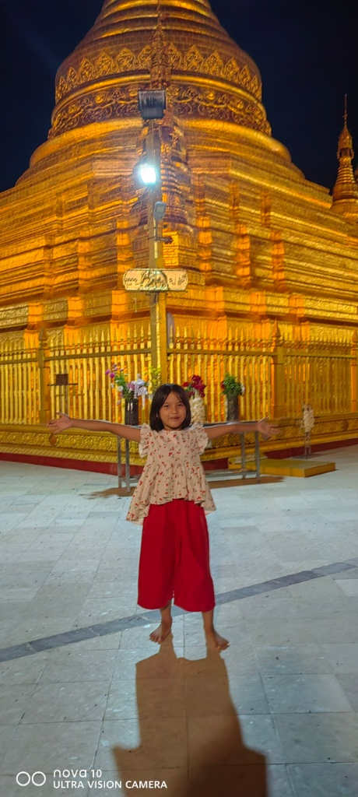

Age 7 • Modern Glass Edition

Little Moments & Daily English
Labubu Corner: စာလုံးလေးတွေကို နှိပ်ပြီး အသံထွက် အတူတူ လိုက်ဆိုကြည့်ပါ။
Curated Snapshots
ပုံလေးတွေပေါ် တင်ကြည့်ပါ


English Vocabulary
နှိပ်ပြီး အသံထွက် နားထောင်ပါ
Umbrella
Listen
ထီး
"I have a pink umbrella."
Origami
Listen
စက္ကူခေါက်အနုပညာ
"I like folding paper."
Pagoda
Listen
စေတီပုထိုး
"The pagoda shines brightly."
Curiosity
Listen
စူးစမ်းလိုစိတ်
"Learning new things is fun."
Kindness
Listen
ကြင်နာတတ်ခြင်း
"Always be kind to others."
Happiness
Listen
ပျော်ရွှင်မှု
"A warm smile brings happiness."
Everyday Sentences
နေ့စဉ်ပြော ဝါကျတိုလေးများI carry my pink umbrella when it rains.
မိုးရွာတဲ့အခါ ငါ့ရဲ့ ပန်းရောင်ထီးလေးကို ဆောင်းတယ်။
I enjoy making crafts and reading books.
Labubu is my favorite little companion.